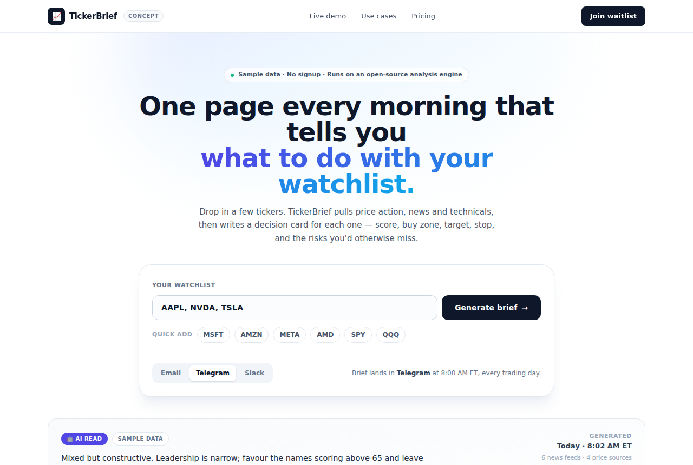

Daily Stock Analysis: LLM Stock Reports for Your Watchlist
ZhuLinsen/daily_stock_analysis · AI appsMIT⭐ 71,719

What it is. ZhuLinsen/daily_stock_analysis is an MIT-licensed, Python-based system that runs an LLM over your stock watchlist each day. For every ticker it pulls quotes, K-lines, technical indicators, news, filings and fundamentals, then writes a report with a verdict, a score, trend read, buy/sell levels, risk flags, catalysts and a checklist. Results land on a web dashboard and can be pushed to WeChat Work, Feishu, Telegram, Discord, Slack or email. It ships with a backtest view, a position tracker and a multi-turn "strategy Q&A" agent with 15 built-in playbooks.
Why it's taking off. Setup is a fork plus a few GitHub Actions secrets, so the whole thing runs on a free schedule with no server. Per the README it covers A-shares, HK, US, Japan, Korea, Taiwan and ETFs, and defaults to free data sources like yfinance and AkShare, with paid sources optional. The repo has ~71.7k stars and gained roughly 540 stars/day recently, which usually means the output is genuinely useful rather than a demo.
Where the product opportunity is. The code is solid but the packaging is aimed at Chinese retail users. A hosted English product with US tickers, Stripe billing, an email/Telegram digest and a friendly onboarding flow would let people who don't want to run GitHub Actions get the same output. The hard part is compliance (see note), not engineering.
Today's top 5
| # | Repo | Buzz | Startup | Overall |
|---|---|---|---|---|
| 1 | ZhuLinsen/daily_stock_analysis | 7.33 | 7.15 | 7.28 |
| 2 | Jakeschincariol/day-trader-skill | 7.0 | 7.35 | 7.16 |
| 3 | Verlintas/NOIR | 8.0 | 6.9 | 7.09 |
| 4 | opencoredev/islandcn | 7.0 | 5.7 | 6.82 |
| 5 | shanselman/gputaskman | 6.33 | 6.55 | 6.6 |